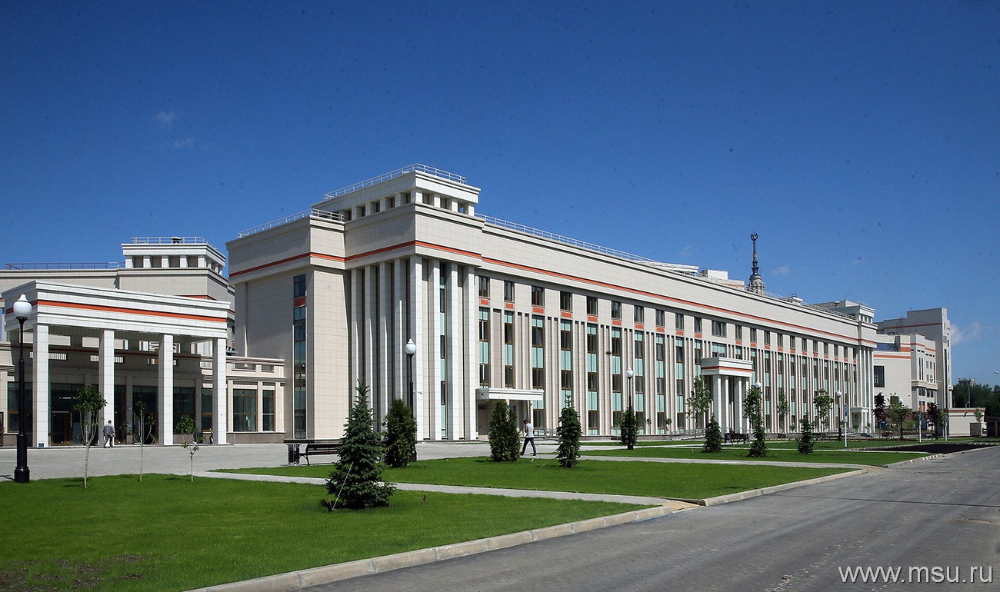

Университетская гимназия (школа-интернат) — структурное подразделение Московского государственного университета. Открыта 1 сентября 2016 года. Обучение в гимназии проводится по 5 профилям: математическому, инженерному, естественнонаучному, гуманитарному и социально-экономическому.
Особенностями Университетской гимназии являются индивидуальный подход к каждому обучающемуся, модульность обучения, наличие проектной и исследовательской деятельности. Образовательный процесс предполагает постепенный переход от классно-урочной системы к нелинейным формам организации занятий. Исследовательская деятельность школьников осуществляется в научных лабораториях факультетов МГУ под руководством ведущих ученых.
